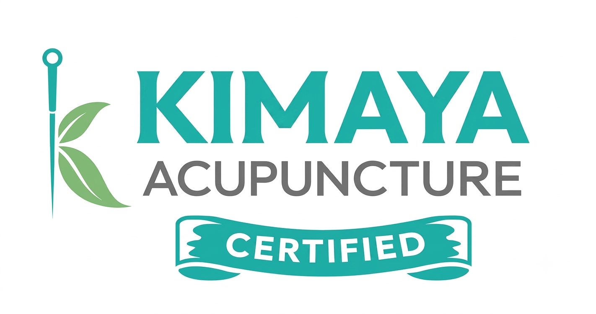

Certified Professional Acupuncture Clinic
Natural Healing. Professional Care. Proven Results.
Book Your AppointmentThe term "acupuncture" describes a family of procedures involving the stimulation of anatomical points on the body using a variety of techniques. The acupuncture technique that has been most thoroughly studied scientifically involves penetrating the skin with thin, solid, metallic needles that are manipulated either by hand or by electrical stimulation.
NO Injections • NO Steroids • NO Surgery • NO Medicines • NO Side Effects
Professionally trained and licensed acupuncturist with extensive experience and proven results
Effective treatment for various conditions supported by scientific research and patient testimonials
We treat a wide range of conditions with proven acupuncture techniques
Acupuncture has been shown to be helpful for many conditions, including addiction, pain and nausea. Acupuncture is also used to treat many other conditions, but this has not been as thoroughly studied scientifically.
A professionally trained acupuncturist, medical doctor or acupuncture student in training may perform acupuncture. Our practitioners are fully licensed and certified.
Yes, acupuncture is safe when performed by a qualified, licensed practitioner using sterile needles. Side effects are minimal and rare.
The number of sessions varies depending on the condition being treated and individual response to treatment. During your first consultation, we'll discuss an estimated treatment plan.
Most people find acupuncture to be relaxing. The needles used are very fine and most people feel minimal to no pain during treatment.
During your first visit, we'll discuss your health history, current symptoms, and treatment goals. You'll then receive an acupuncture treatment tailored to your specific needs.
5th floor, Ayodhya Society, S.N. 672/B, Flat No.20
opp. Canara Bank, Bibwewadi
Pune, Maharashtra 411037, India
Opens at 3:00 PM
Call for exact closing time
5.0/5.0 Rating (11 reviews)